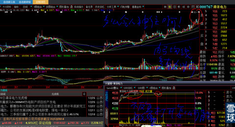
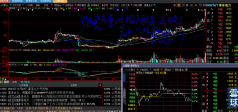
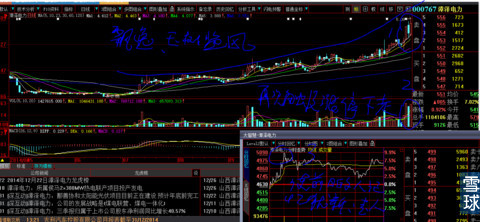
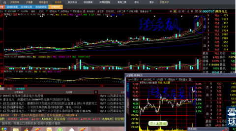
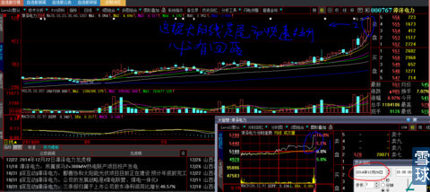
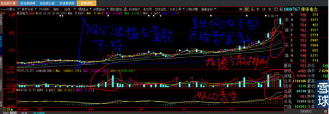
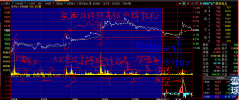
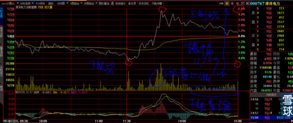

先声明：明天上班，没有时间写我认为与你们财富挂钩很紧很紧的帖子。先写本帖的一部分出来，是给你们一个对照手中个股高点T的机会以及回避太看好追涨股买进就会被套的可能。绝对不是对所述个股的褒贬。请仔细仔细研读。是对它为什么会有最近三天回调的分析，它能这样，其他股票在走出来之前也会如此。
本文题目过段时间会改为《XXXX真金白银实战分析》，今天是2015年1月3日放假中。
下图是2014年12月22日漳泽电力日K线与分时图。
早盘就放量冲高必是庄家对敲拉高，你想啊，早盘哪里会有那么多的卖盘等在哪里等庄家去买？卖盘人怎么知道今天会有人冲上来？
市场的买盘在庄家拉高的鼓励下蜂拥而至，第一个涨停反复打开，是庄家为震出低位筹码，必须自己卖出一部分，不然哪里有那多的筹码买卖？目的是达到“震仓”效果，记住这是震仓不是洗盘，今后再教你们什么是洗盘什么是震仓的区别。
但是，无论大资金怎么玩，“内弓形”均线系统的宽缝隙多头均线排列并开始改变速率，角度开始陡峭初露苗头。

2014年12月23日开盘就下杀（见下图），把昨天多少以为会连续涨停跟进人的美梦击碎？主力在股价下跌的回升过程中低价找回了昨日涨停板位置全部卖出去的筹码并收集到更多，然后放任自流，让股价随大盘自然下滑。跟盘人为什么不试想：主力如果第二天直接再拉高还会有人卖吗？为什么不想这样均线排列、并且股价是一步一个“足形K线组合”脚踏实地走上来的第一个涨停板？难道就这样放弃？这个时候唯一知道的就是大阴量与昨日大阳量无异，底部跟庄的低价筹码与昨日追高的技术派短线客筹码基本清洗干净。

2014年12月24日（见下图），开盘之后一小步一小步的反复上攻，成交显得很自然，看看早盘分时图明显感觉是真刀实枪的多空双方在用真金白银拼刺刀。早盘在半小时后触及涨停板，前天的涨停反复打开让参与其中的人们记忆犹新，这就是大资金需要的效果。尾盘主力力挽狂澜把走掉的人抛在下面不给机会。这个时候再看下图：我只能用玉树临风、飘逸来形容。有这种眼感的人自然会有，没有的人你就是用刺刀撑开他的眼睛也没有用。就像看梵高的油画。

2014年12月25日（见下图），股价在全天做波浪形运动，运用的就是电脑框架原理，制造恐怖与热情气氛。尾市直线拉高收盘是为了达到拉升短期均线陡峭的目的，也就是大家经常说的：控制收盘价。同时也说明，他不准备有任何机会给盘中波浪下跌出逃的人。

2014年12月26日，股价在14:10时启动，以飞速的方式封住涨停板，见下图分时图，简直就是尾市直线拉升，加上昨天的4.86%的涨幅，两天里已经有了复利15%的总涨幅，短线客技术高手已经有了可观的利润。他们是庄家盘中的心腹大患。

2014年12月29日（见下分时连续图所圈5第二天上午多空的交战是多么硬朗？拳拳到肉。

下图是12月24日—31日的连续分时成交图。我们可以看到31日下午13：01时，所圈6处股价基本回落到了图中所圈5处。

下午13:01时开始了一轮放量拉升，目的就是让股价无论是分时、日线、周线、月线重回上升之途。

通过以上的解盘，知道了如何观察大阳线拉升方式，即使K线组合看起来差不多也要回调的原因了吗？特别是漳泽电力25、26两天的直线拉升导致的后三天下跌？以及下跌到何位置会重新开始？
 |
它为什么会有下挫回调炒的是心 2015-01-03 18:40:33 |
Copyright © 1996-2014 SINA Corporation All Rights Reserved.